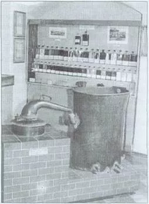

Jan Boży, Józef Ignacy Łada Łukasiewicz urodził się 8 marca 1822 roku w Zadusznikach nad Wisłą. Ojciec Józef i matka Apolonia z Kniaziów Świętopełków utrzymywali się z dzierżawy wsi - Zaduszniki. W latach 1832-1836 Łukasiewicz pobierał nauki u Ojców Pijarów w Rzeszowie, a następnie rozpoczął praktykę w aptece Antoniego Swobody w Łańcucie.
W 1846 roku przeniósł się na dalszą praktykę do apteki Hubala w Rzeszowie. Tutaj w Rzeszowie prowadził przygotowania do powstania narodowego w Galicji. Za tę działalność został aresztowany i przebywał dwa lata w więzieniu u "Karmelitów" we Lwowie. Gdy w 1848 roku opuścił więzienie podjął pracę w aptece Piotra Mikolascha. Następnie udał się do Krakowa, gdzie w 1850 roku rozpoczął jednoroczny kurs farmaceutyczny na Uniwersytecie Jagiellońskim.
Celem pogłębienia studiów farmaceutycznych przeniósł się Łukasiewicz na Uniwersytet Wiedeński, tu też, na wydziale medyczno-chirurgicznym, uzyskał w 1852 roku dyplom magistra farmacji.
Mając już nabyte podczas studiów podstawy teoretyczne przystąpił wspólnie z kolegą Janem Zehem do prowadzenia doświadczeń nad destylacją ropy, otrzymując w jej wyniku naftę nadającą się do oświetlenia. Pierwszy model lampy, w której jako substancja oświetleniowa została wykorzystana nafta, zabłysnął w oknie wystawowym apteki Mikolascha, w marcu 1853 roku. W tym też roku udało się Łukasiewiczowi namówić dyrektora szpitala powszechnego we Lwowie, aby wprowadził oświetlenie naftowe. Szpital został oświetlony w dniu 31 lipca 1853 roku. Od tej daty liczy się początek przemysłu naftowego w Galicji i świecie.
Początkowe dochody ze sprzedaży nafty były niskie, dlatego też Łukasiewicz nie rozstawał się z aptekarstwem, ciągle doskonaląc swój wynalazek. Pragnąc pogłębić zakres prac badawczych nad destylacją ropy, w 1853 roku przeniósł się do Gorlic, gdzie objął stanowisko prowizora w aptece należącej do Ludwiki Bartkowej. Apteka, w której pracował Łukasiewicz, mieściła się w obecnym budynku Urzędu Miasta.
Podjęcie tej decyzji spowodowane było tym, iż w rejonie Gorlic, m.in. na terenie Kobylanki znajdowały się odkryte złoża ropy. W ciągu całego okresu pobytu w Gorlicach penetrował okolice w poszukiwaniu ropy naftowej. Zapoznał się z fabryką asfaltu Stanisława Jabłonowskiego w Kobylance, a szczególnie ze sposobem produkcji asfaltu. Na podstawie informacji uzyskanych w Kobylance dotarł do Jana Szymono-wicza - właściciela dóbr w Sękowej, w Siarach i Sokole, który ze swych kopanych studzien ropnych zaopatrywał fabrykę w Kobylance.
Łukasiewicz prowadził liczne eksperymenty z ropą przy współpracy z laborantem aptecznym Jakubem Kozikiem z Sokoła. Dużo też pracy przeznaczał na doskonalenie lampy naftowej. W 1854 roku w Gorlicach, przy skrzyżowaniu dróg do Sękowej i Wysowej zapalona została pierwsza w świecie uliczna lampa naftowa.
Działalność Łukasiewicza zmierzała także do rozwoju przemysłu naftowego w rejonie gorlickim. Zakładał, przy współudziale m.in. Marcelego Groblewskiego, Jana Szymonowicza, spółki kopalniane w Bystrej i w Sękowej. W Męcinie Wielkiej nabył własną kopalnię, został udziałowcem budowy rafinerii w Ropie i w Siarach.
W czasie pobytu w Gorlicach pomagał bezinteresownie ludności w okresie epidemii cholery w 1855 roku.
W dniu 20 kwietnia 1857 roku w kościele parafialnym w Gorlicach zawarł związek małżeński ze swą siostrzenicą - Honoratą Stacherską, po uzyskaniu zgody papieża. Mieli córkę Mariannę, która zmarła po 22 miesiącach życia, 7 grudnia 1859 roku.
W 1858 roku I. Łukasiewicz opuścił Gorlice i przeniósł się do Jasła. Właśnie tutaj, w tym samym roku, w czasie wystawy organizowanej przez Krakowskie Towarzystwo Rolno-Gospodarcze otrzymał dyplom pochwalny za ekspozycję wyrobów naftowych, nafty świetlnej, benzyny, wazeliny, itp. wyprodukowanych w Gorlicach.
W latach 1861-1863 Łukasiewicz buduje rafinerię i oddaje się wyłącznie sprawom przemysłu naftowego. Zamieszkał w Chorkówce. Tutaj zakłada kasy brackie, prowadzi działalność charytatywną w zakresie udzielania zapomóg i zasiłków. Jako radny powiatowy przez 14 lat przyczynił się do zakładania burs, ochronek oraz budowy dróg i mostów. W jego domu znajdowali schronienie emigranci i uczestnicy powstania styczniowego, których wspomagał własnymi funduszami.
Ignacy Łukasiewicz był fundatorem szkół powszechnych w Bóbrce, Chorkówce, Żeglcach i Zręcinie. W Chorkówce zakłada szkołę koronkarską prowadzoną przez żonę Honoratę. Podejmuje starania założenia w Bóbrce szkoły górniczej. Szkoła ta powstaje jednak w Ropiance koło Dukli, następnie przeniesiona zostaje do Wietrzna i Borysławia. Absolwenci tych szkół jako wiertacze i nadzorcy kopalni wsławili imię Polaków na obu kontynentach Ameryki, w wielu krajach Europy, Azji i Wysp Pacyfiku.
W roku 1876 I. Łukasiewicz zostaje wybrany posłem do Sejmu Krajowego, gdzie prowadzi wielostronną działalność w komisjach m.in. górniczej, kultury, podatków.
31.07.1878 roku podczas uroczystości rocznicy 25-lecia zapalenia pierwszej lampy naftowej we Lwowie, Łukasiewicz otrzymuje od społeczeństwa polskiego złoty medal i album. W 1880 roku staje na czele Krajowego Towarzystwa Naftowego broniącego rodzimych przedsiębiorstw naftowych przed obcym kapitałem. Siedzibą Towarzystwa były Gorlice.
Dzięki Łukasiewiczowi w 1882 roku powstało polskie czasopismo naftowe "Górnik", wydawane w Gorlicach do 1886 roku. Pierwszy numer ukazuje się na tydzień przed śmiercią pioniera przemysłu naftowego.
Ignacy Łukasiewicz pracował do ostatnich dni życia, zmarł po krótkiej chorobie 7.01.1882 roku w Chorkówce i został pochowany na cmentarzu w Zręcinie. W uroczystościach pogrzebowych wzięły udział wielotysięczne rzesze ludzi. Pozostał w pamięci następnych pokoleń jako dobrze zasłużony narodowi.
Łukasiewicz za swoją działalność charytatywną otrzymał od papieża Piusa IX w 1873 roku tytuł szambelana papieskiego i order Świętego Grzegorza. Powszechnie nazywany był "Ojcem Łukasiewiczem" i w pełni sobie na ten tytuł zasłużył. Pamięć o Ignacym Łukasiewiczu została zachowana dzięki jego pionierskim osiągnięciom w udoskonaleniu lampy naftowej, rozwoju przemysłu naftowego a także jego postawie jako patrioty i społecznika. W uznaniu tych zasług nadano imię Ignacego Łukasiewicza uczelniom, szkołom, ulicą.
Od 1 września 1975 roku Ignacy Łukasiewicz - patriota, naukowiec, wynalazca, konstruktor i pionier przemysłu naftowego jest patronem naszej szkoły.
Zespół Szkół Nr 1 im. Ignacego Łukasiewicza w Gorlicach jak i 30 placówek oświatowych z całej polski noszących imię tego wybitnego twórcy przemysłu naftowego, należy do Rady Szkół im. Ignacego Łukasiewicza, która jest organem doradczym Stowarzyszenia Naukowo - Technicznego Inżynierów i Techników Przemysłu Naftowego i Gazowniczego.
Organem wykonawczym Rady jest siedmioosobowe Prezydium, wybierane w czasie trwania Sesji Szkół im. Ignacego Łukasiewicza na okres czterech lat. Obecnie przewodniczącą Prezydium jest pani Joanna Kubit - Dyrektor Zespołu Szkół Ponadgimnazjalnych Nr 4 w Krośnie, a Członkiem Prezydium z naszej Szkoły jest pani Alina Mrozek.
Przedstawiciele Szkół im. Ignacego Łukasiewicza spotykają się co 2 lata na Sesjach Szkół im. Ignacego Łukasiewicza. Celem tych spotkań jest propagowanie postaci Patrona - Ignacego Łukasiewicza, wielkiego wynalazcy, prekursora przemysłu naftowego, patrioty i społecznika. Spotkania te dają również możliwości zawierania nowych znajomości, poznawania różnych regionów Polski, wymiany doświadczeń.
Od 7 lat nasz szkoła współpracuje z Fundacją PGNiG im. Ignacego Łukasiewicza z siedzibą w Warszawie. Otrzymywane środki przeznaczamy na realizację zajęć pozalekcyjnych, wycieczki dydaktyczne oraz zakup sprzętu niezbędnego do prowadzenia tych zajęć. Główną naszą działalnością jest prowadzenie ścieżki edukacyjnej "Śladami Ignacego Łukasiewicza". W ramach tych zajęć uczniowie mają możliwość: